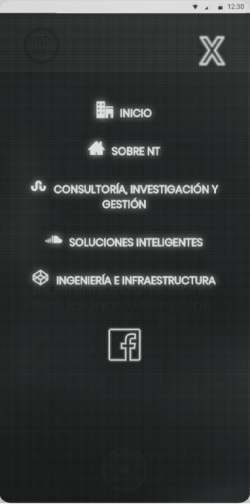
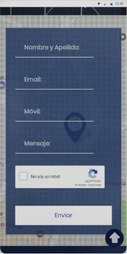

NT GRUPO
Intro
NT GRUPO, es una compañía de consultoría e integración de soluciones tecnológicas de la información, comunicaciones e infraestructuras.
Metas
Desarrollar una web amigable, que facilite al usuario poder encontrar diferentes servicios tecnológicos de una manera muy sencilla.
Plataforma
Web
Herramientas
Lápiz y papel, Illustrator, Adobe XD.
Wireframes de alta fidelidad
Después de varias rondas de pruebas de usuarios en los wireframes de baja fidelidad, pase a las pantallas en alta fidelidad.

Menú web
Servicio detalle

Formulario
Servicios


Dise√±ado y desarrollado por mi üî•üëΩ